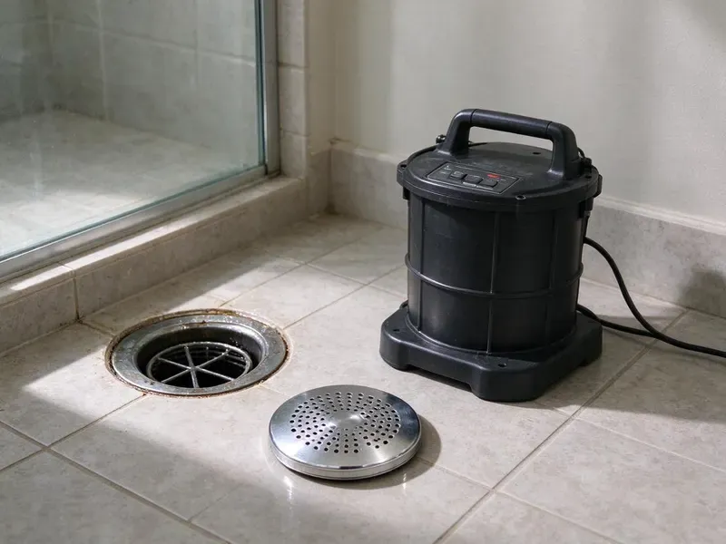

Drain Services in Cheektowaga, NY
Main line clogged and nothing drains? We get it flowing, often the same day. Serving Cheektowaga, NY.
- Same-Day Drain Service
- Same-Day Clog Removal
- New York-Owned & Operated
- Sewer Line Experts

Get Your Drains Moving in Cheektowaga, NY.
Most drain calls take one to two hours.
Drain Services in Cheektowaga, NY
HCL Plumbing handles drain service across New York for houses, apartments and businesses. Every crew has snakes, a jetter and a sewer camera. We clear the clog, run water to confirm it flows, and when a drain keeps coming back, we put a camera down it to see why. No guesswork.
Our expertise includes:
- Main line clearing through the cleanout
- Root cutting in sewer laterals
- Hydro jetting that removes grease, scale and tree roots

Additional Drain Services Services in Cheektowaga, NY
From stubborn kitchen clogs to main sewer backups, our drain services in Cheektowaga, NY restore full flow fast and keep it that way.


Customers
Why Choose HCL Plumbing for Drain Services in Cheektowaga, NY?
Upfront pricing is part of the job. You get the price before we start. A main line call, a kitchen sink clog and a hydro jetting job are priced differently, and we tell you which one you need and what it costs before running any equipment. No surprises.
- Long-Term Results, We recommend fixes that last, not quick patches.
- Right Equipment, The tool matches the clog.
- Right Tools, Cable machines, jetters and cameras ride on every truck.
Citywide Coverage
Kitchen, bathroom, basement or main line, we handle every drain in the house. Our crews cover Cheektowaga and nearby towns most days of the week, ready for any clog. Fast help.
Experienced Team
Our plumbers are experienced in diagnosing all types of drain problems found in New York homes. They know which tool fits which clog. That shows up in the details, like knowing when a cable is enough and when a jetter is needed to scrub the line clean. Small things matter.
Safety-First Approach
We protect the house during drain work. Drop cloths go down where we walk. When we pull a toilet or open a cleanout inside, we keep everything contained so nothing ends up on your floor. Clean finish.
Trusted Certified Cheektowaga Plumbing Services Professionals
At HCL Plumbing, we are proud to offer certified plumbing services throughout Cheektowaga, NY. Credentials matter in this trade. Every repair, install and maintenance visit follows strict safety and quality rules, and the plumbers doing the work carry recognized industry credentials.
Call Us Now PHCC Plumbing Contractor Recognition
PHCC Plumbing Contractor Recognition Better Business Bureau (BBB) Accreditation
Better Business Bureau (BBB) Accreditation Angi Certified Pro
Angi Certified Pro ISO 9001 Quality Management Certification
ISO 9001 Quality Management CertificationWhat Our Drain Crews Handle in Cheektowaga, NY
Drain Jetting and Unblocking for Businesses in Cheektowaga
Commercial drains carry heavy loads. Restaurants, salons, laundromats and apartment buildings each clog in their own way, so the work happens when it suits you. One call.

Yard and Storm Drain Clearing in Cheektowaga, NY
Yard drains clog with silt, leaves and roots. Puddles form near the house. We clear them with a cable or jetter and confirm flow with a garden hose, so the next heavy rain drains away from the foundation instead of toward it. Simple maintenance.
Main Sewer Line Cleaning in Cheektowaga, NY
A clogged main shows up as backups at the lowest drains first. We go in through the outdoor cleanout. A large cable machine with a root-cutting head clears most main line blockages, with jetting for heavy buildup. Then we camera it.
Commercial Drain Services in Cheektowaga, NY
Restaurants, offices and apartment buildings put heavy demands on drains. Commercial kitchens fight grease constantly. We jet kitchen lines, clear floor drains and work around grease interceptors, scheduling the work after hours so your business stays open. Maintenance plans available.
Storm Drain Cleaning for Cheektowaga, NY
Spring snowmelt and heavy rain can raise water tables quickly in New York, sending water into basements and testing sump pumps. Yard drains, downspout lines and catch basins fill with leaves, silt and roots over time, which sends water toward the house. We clear them with a cable or jetter, and run water to confirm flow. Before storm season is best.
High-Pressure Hydro Jetting in Cheektowaga
A hydro jetter sends water through a nozzle at several thousand psi. It scours the full inside of the pipe. Grease, scale, sludge and fine roots break loose and wash downstream, leaving the pipe close to its original diameter rather than with a small hole punched through the clog. Good pipes only.
Sewer Line Replacement When Cleaning Is Not Enough in Cheektowaga
Some lines cannot be cleaned into working order. Cleaning cannot fix a crack. When a camera shows collapsed sections, offset joints or bellies that keep collecting waste, we explain replacement options, from trenchless pipe bursting to open trench, and price them for you. Your choice.

Sewer Cleaning and Hydro Jetting in Cheektowaga, NY
Main lines with heavy grease or root buildup respond best to jetting. A cable clears a path. Jetting scrubs the full pipe wall and flushes debris to the city main, which also lets us see the pipe condition. Two steps, one visit.
Drain Cleaning Near Cheektowaga, NY
Local drain service matters because homes in an area share pipe types. Whole neighborhoods were built with the same materials. We know which homes around Cheektowaga tend to have cast iron, clay or early PVC, so we come prepared. Saves time.
Our crews clear drains around Cheektowaga every day. Patterns repeat across neighborhoods. If your neighbor has roots in the sewer, you might too, which gives us a head start. Experience helps.
HCL Plumbing at a Glance
- Fully licensed plumbing team covering Cheektowaga, NY
- 24/7 emergency service with same-day scheduling
- Clear written estimates, no hidden fees
- 4.8-star rated by 520+ New York customers
Cheektowaga Map
Cheektowaga Information
- Population
- 76,829
- Area codes
- Local
- Service area
- Cheektowaga and communities within 40 miles
- Nearby
- Buffalo, Tonawanda Town, Niagara Falls, Rochester
Old cast iron, hard water scale and kitchen grease are why so many drains in Cheektowaga, NY slow down long before they stop.
Talk to a Plumber
Call HCL Plumbing for honest, reliable plumbing from people who know the trade in Cheektowaga, NY.
Our Specialized Plumbing Services in Cheektowaga, NY
At HCL Plumbing, we handle the full list of plumbing services across Cheektowaga, NY. We go from leak detection all the way to full system installations, for homes and commercial buildings, and we do it quickly at a fair price. Explore our core services below:


How We Clean a Drain in Cheektowaga, NY
Here is how it works when we clear your drains.
Free Estimate
Call (716) 396-7101 to describe the issue. We give you a price before starting.
Pick the Method
The clog decides the tool. Then we explain why.
Clear and Confirm
We open the line, test the flow and show you camera footage if needed.
Frequently Asked Questions About Drain Services in Cheektowaga
Simple snaking often runs $150 to $350. Main line and jetting jobs cost more. The price depends on how complex the clog is, where it sits in the system, and what method it takes. Estimate first.
Yes. Terms depend on the service. Drain cleaning carries a shorter guarantee than sewer line replacement, so you see the terms upfront. Ask for details.
For a small clog, maybe. They often fail on tough ones. Chemicals can damage older pipe, harm septic systems and create fumes when mixed, so they are not a real fix. Mechanical is safer.
Cleaning, no. Repairs usually need one. Sewer line repair or replacement requires a permit and an inspection in most areas, and we pull it, schedule the inspection and keep you updated throughout the process. Signed copy provided.
We focus on clearing and repairing the pipes, not fixture brands. That said, we know them all. Our technicians are familiar with Moen, Delta, Kohler, American Standard and others, and can handle any issue with their drain assemblies or pop-up stoppers during service. Brand rarely matters.
Roots follow moisture. Any crack or loose joint is an invitation. Much of New York sits on glacial till, rock and clay, which makes excavation for sewer and water lines slower and harder. Shifting ground opens old clay and cast iron joints wider over time, which lets more roots in and makes the blockage worse each season. New pipe stops it.
Only when needed for most homes. Root-prone lines benefit from a schedule.
All major brands. Moen, Delta, Kohler and American Standard. We make sure replacement parts are compatible and high quality, and we stock common drain components on the truck so most repairs get done in one visit. Brand rarely matters.
What People Are Saying About Our Plumbing Experts?

Karen W.
After our third pinhole leak in copper, we stopped patching. HCL Plumbing gave us a written plan room by room and repiped the house in PEX while we stayed in it. The crew covered our floors every morning and cleaned up every night.
Repiping · Irondequoit, NY
Monica A.
Our water bill nearly doubled in one month with no change in how we used water. The tech checked the meter, heard the leak under the hallway with his equipment, and opened a hole about a foot square. Fixed the same day.
Slab Leak Repair · Rochester, NY
Marcus H.
Grease from the fryer line kept clogging the kitchen drain at my diner. HCL Plumbing hydro jetted the line after closing, showed me the buildup on camera, and set us up on a quarterly cleaning so it does not catch us on a Friday again.
Drain Cleaning · Cheektowaga, NYLaura S.
Our 40 gallon tank started leaking from the bottom after thirteen years. The tech hauled the old one out, set a new unit with a fresh expansion tank, and had hot water running in about four hours. He took the old tank with him too.
Water Heater Replacement · Niagara Falls, NY
Carlos V.
Our house still had galvanized pipe, and upstairs the shower was a trickle. The crew repiped everything in PEX over three days and patched every drywall hole before they left. The pressure difference is night and day.
Repiping · Niagara Falls, NY
Paul B.
Our pit pump ran nonstop even in dry weather. The plumber found the check valve was stuck open, so the same water kept cycling back into the pit. New valve, new float switch, done in an hour. It runs quiet now.
Sump Pump · Syracuse, NY